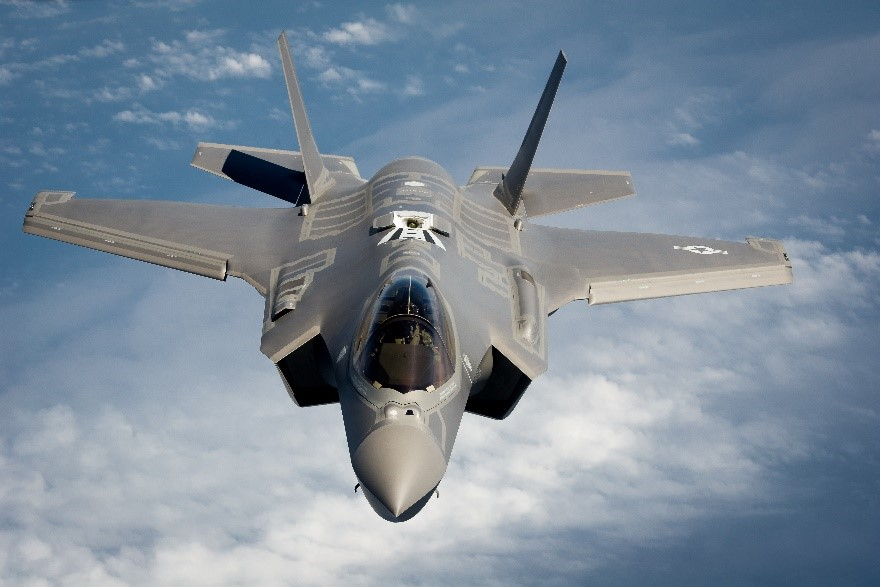

Case Study for F-35
The Lockheed Martin F-35 Lightning II is a family of single-seat, single-engine, all-weather stealth multirole fighters undergoing final development and testing for the United States and partner nations. The fifth generation combat aircraft is designed to perform ground attack and air defense missions.
After 15 years of development and billions of dollars of investment, software glitches continue to hamper Lockheed Martin F-35 Lightning II operations. Software issues continue to be a problem for US Marin Corps F-35Bs loaded with Block 2B software, even though those aircraft are supposedly the most stable, with a reported average of "8h between software stability events". If used in combat, the F-35B would need help avoiding threats, acquiring targets and controlling weapons. There is significant number of bugs on the radar system which requires full restart of the radar program every now and then which is not expected on such expensive flying giant. The Block 2B aircraft are only equipped to carry two bombs and two air-to-air missiles internally, but are also hobbled by “fusion, electronic warfare and weapons employment” deficiencies that cause “ ambiguous threat displays, limited ability to respond to threats, and a requirement for offboard sources to provide accurate coordinates for precision attack ”. Software issues also plague the latest Block 3i aircraft, which are modified with an improved processor. The F-35 Joint Programme Office (JPO) began flight testing the Block 3iR6.21 software version and reported that during the first 30 flights (76 total flight hours) “no less than 27 power cycles were required to get all systems functioning between initial startup and takoff", ranging from full “cold iron” aircraft restarts to component or battery recycling. The spike in reported software troubles comes as the F-35 programme moves away from parallel coding of multiple, concurrent software blocks to a sequential programming effort , something that is to be believed will make the incremental improvement process significantly more efficient. The average time between Block 3i “stability events” currently stands at once every three or four hours compared to 8h for Block 2B but the latest Block 3i iteration that has been tested over 44 flights and 96 flight hours appears to have tripled in reliability – one failure every 15h, approximately. The aircraft is believed to be in full service by 2019.